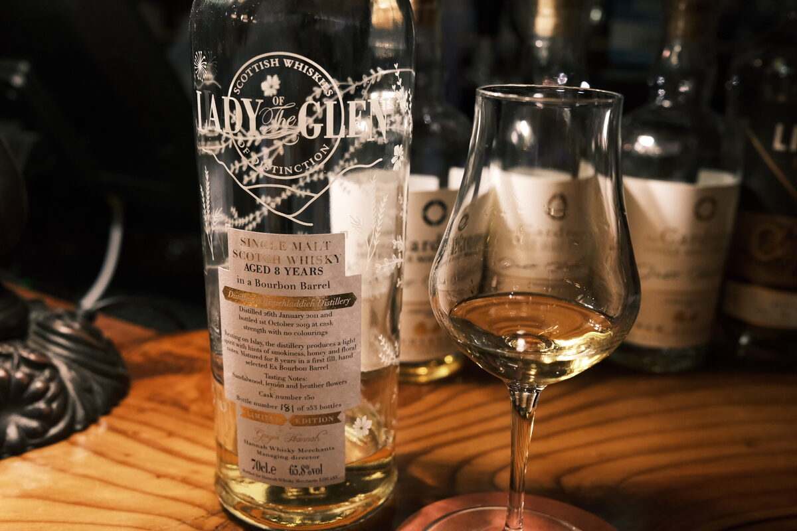

Bruichladdich 2011 Lady of the Glen 8 years 65.8% (bourbon barrel)
Gregor’s back at it, this time with a Laddie.
Colour Gold.
Nose Honeydew melon, caramel and toffee. Quite floral! Blueberry yoghurt – classic Bruichladdich. Dark chocolate, malty. Black Forest cake. With water, buttery: croissants and viennoiserie. Peanut butter. A little bit of rubber.
Palate So malty, very floral. A hint of wax. Powerful, this ABV is not messing around. Let’s add some water. Still quite spicy. The melon note from the nose comes through clearly. Cinnamon and cloves, a little wood. Oily mouthfeel. Still malty. With more water, cereal, rice puffs.
Finish Lactic. Caramel sweetness. Floral. Heavy cinnamon and a whack of oak. Peppers and chillies, with a hint of white chocolate. Long and hot.
Comments Clean distillate. Uncompromisingly powerful. Swims very well. 89/100.

Posted by Dominic on 28 May 2021